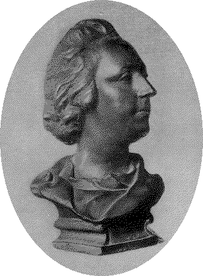

Well May Charlie Wear the Crown
Gu ma maith thig an crùn dha Tearlach
From Captain Simon Fraser's Collection N°110
First Published 1815
Tune
Sequenced by Christian Souchon


|
In Captain Simon Fraser's "Collection of Airs and Melodies peculiar to the Highlands of Scotland and the Isles" this anthem follows another song by "a Bard belonging to the district of Breadalbane", a certain McIntyre, titled
"Deoch Slain't'an Righ"
(The King's Health).
For fear lest he could be mistaken for a Jacobite proselyte, Fraser writes: "This air is one of a directly opposite tendency, though the enthusiasm attached to it, when anticipating their hope of success, has now died away. But so beautiful an air belonging to that pariod may now take the name of Charlotte in place of Charles and be associated with our sentiments of attachment to the present Royal family. |
Dans l'ouvrage de Simon Fraser, "Collection of Airs and Melodies peculiar to the Highlands of Scotland and the Isles" cet hymne fait suite à un autre chant composé par un barde du district de Breadalbane, un certain McIntyre et intitulé
"Deoch Slain't'an Righ"
(A la santé du Roi).
Pour ne pas être soupçonné de sympathies jacobites, Fraser écrit: "Cet "air" est d'une tendance diamétralement opposée, bien que l'enthousiasme qu'il exprime et qui anticipe leurs espoirs de succès, espoirs désormais envolés. Mais dans un si bel "air", même s'il se rattache cette période révolue, on peut maintenant remplacer le nom de Charles par celui de la reine Charlotte et l'associer à nos sentiments de loyauté envers l'actuelle Famille Royale. |
|
The handsome and accomplished youth, whose doings were eagerly reported by the English ambassador at Florence and by the spy, John Walton, at Rome, was now
introduced by his father and the pope to the highest Italian society
, which he fascinated by the frankness of his manner and the grace and dignity of his bearing. In 1737 James despatched his son on a tour through the chief Italian cities, that his education as a prince and man of the world might be completed.
The distinction with which he was received on his journey, the royal honours paid to him in Venice, and the jealous interference of the English ambassador in regard to his reception by the grandduke of Tuscany, show how great was the respect in which the exiled house was held at this period by foreign Catholic powers, as well as the watchful policy of England in regard to its fortunes. The Old Pretender himself calculated upon foreign aid in his attempts to restore the monarchy of the Stuarts ; and the idea of rebellion unassisted by invasion or by support of any kind from abroad was one which it was left for Charles Edward to endeavour to realize. Of all the European nations, France was the one on which Jacobite hopes mainly rested, and the warm sympathy which Cardinal Tencin , who had succeeded Fleury as French minister, felt for the Old Pretender resulted in a definite scheme for an invasion of England to be timed simultaneously with a prearranged Scottish rebellion . (Source: Encyclopaedia Britannica 1911) |
Les faits et gestes du bel et brillant jeune homme étaient jalousement épiés par l'Ambassadeur d'Angleterre à Florence et par l'espion, John Walton à Rome.
Son père et le Pape l'introduisirent dans la plus haute société italienne
où il faisait grande impression par son naturel, sa grâce et sa dignité. En 1737 Jacques envoya son fils faire une tournée des principales cités italiennes, pour parachever son éducation de prince et d'homme du monde. La pompe avec laquelle il fut reçu au cours de ce voyage, en particulier à Venise, ainsi que les protestations le l'ambassadeur anglais contre l'accueil grandiose que lui réserva le grand-duc de Toscane, montrent assez en quelle estime étaient tenus par les puissances catholiques européennes les monarques exilés et l'attention avec laquelle l'Angleterre surveillait leurs faits et gestes.
Le Vieux Prétendant lui-même spéculait sur une aide étrangère pour le seconder dans ses tentatives de restaurer la monarchie des Stuarts. L'idée d'une rébellion qui ne s'appuierait pas sur une invasion ou un quelconque soutien étranger, Charles Edouard fut le seul à la concevoir et à tenter de la réaliser. De toutes les nations européennes, la France était celle sur laquelle les Jacobites fondaient le plus d'espoirs, encouragés par le remplacement du ministre Fleury par le Cardinal Tencin qui éprouvait pour le Vieux Prétendant une sincère sympathie. Il en résulta un projet d'invasion de l'Angleterre et d'un soulèvement de l'Ecosse concomitant, préparé à l'avance . Source: Encyclopédie Britannique 1911 |